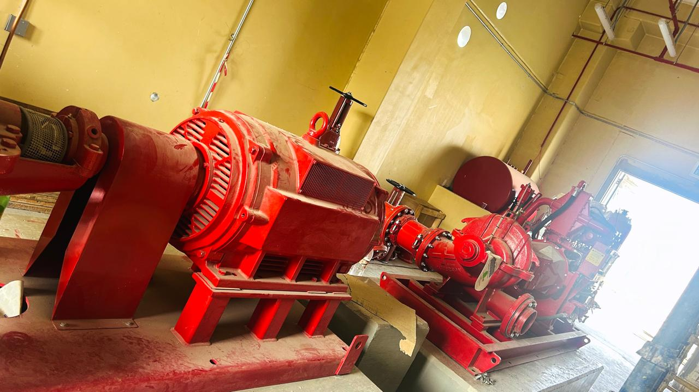
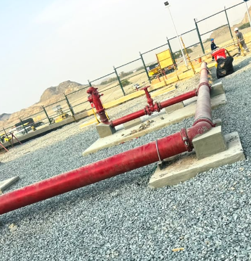
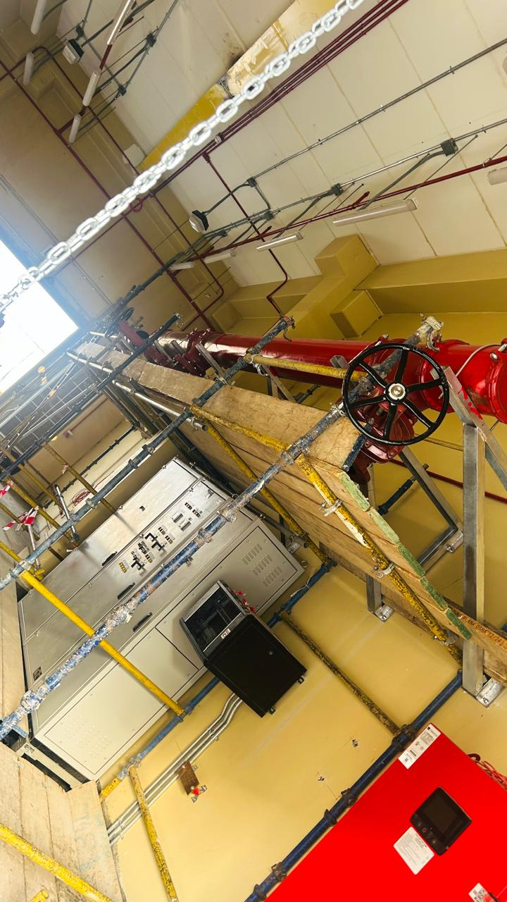

Scope & drawing coordination
Review project requirements, approved drawings, work interfaces, access, sequence, and coordination needs before installation.
HOME / OUR SERVICES / 04
Potential installation support for firefighting and fire-protection scopes in residential, commercial, industrial, and infrastructure projects, subject to approved design and agreed responsibilities.
Discuss fire systemsFIRE PROTECTION
SF MASSIVE can support firefighting system installation activities according to the agreed scope, approved design documents, project specifications, and applicable site requirements. The required design, authority approvals, and qualified parties must be confirmed for each project.
SERVICE PROFILE
Selected visuals related to this service division.



Supplied firefighting service photographs. Specific project attribution is not verified.
PROJECT-BASED SCOPE
System details and responsibilities depend on the approved project documents and applicable authority and site requirements.
Review project requirements, approved drawings, work interfaces, access, sequence, and coordination needs before installation.
Support installation of the specified pipework, supports, fittings, valves, sprinkler components, hose cabinets, hydrant interfaces, or fire-point items included in the agreed scope.
Coordinate work fronts and interfaces with civil, electrical, mechanical, and other project teams as required.
Coordinate inspections, records, and handover information required by the approved scope and project process.
Coordinate specified tank connections, pump suction and discharge interfaces, headers, valves, equipment positioning, and related mechanical or electrical interfaces. Pump design and system controls remain governed by approved engineering documents.
Coordinate containment, cabling, and equipment interfaces with the responsible fire-alarm specialist where included in the scope. Design, programming, integration, testing, and certification require appropriately qualified parties.
Coordinate project-specified inspections, pressure testing, flushing, system checks, test records, approved as-built information, and handover documentation with the responsible parties.
The required licences, Civil Defense approvals, certifications, and responsibilities must be confirmed for each project before appointment.
SAFE, COORDINATED WORK
Installation activities must follow the project’s approved design and the conditions set for the site.